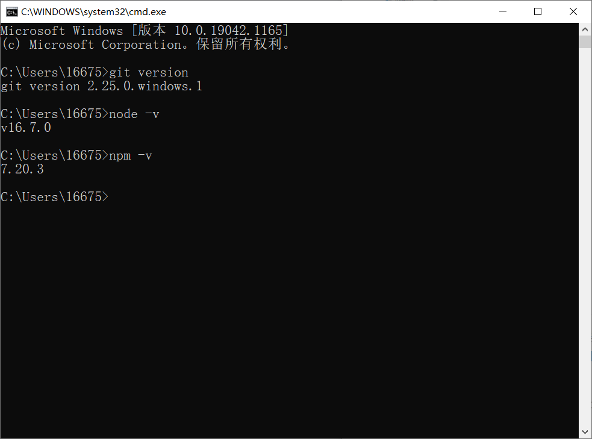

hexo博客的备份与恢复
为了防止误操作或计算机崩溃导致的博客源文件丢失，或满足我们更换电脑进行写作的需求，定期进行备份与恢复就显得很重要了。
备份
需备份的文件目录
我们在进行备份时，并不需要将整个博客目录全部备份，只备份以下几个用户自定义的即可：scaffolds目录，source目录，themes目录，.gitignore文件，_config.yml文件，package.json文件，其他都是通用的。
首先我们先来观察整个博客目录的结构：
.deploy_git 本目录会在我们部署时生成，也就是github上保存的文件，无需备份。
node_modules 本目录包含了hexo博客依赖的模块，安装时自动生成，无需备份。
public 与.deploy_git类似，是编译后生成的文件静态网页文件，无需备份。
scaffolds 保存了用户文章的模板，需要备份。
source 保存了用户文章的源文件，需要备份。
themes 保存了用户下载的主题文件与配置，需要备份。
.gitignore 保存了推送到github时忽略的文件名，需要备份。
_config.yml 保存了用户配置信息，需要备份。
db.json 保存了网页的数据文件，在编译生成静态网页时会自动更新，无需备份。
package.json 保存了依赖的模块列表，需要备份。
package-lock.json 保存了依赖的模块安装记录，无需备份。
备份操作
在了解了需要备份的文件后，就可以进行备份了，可以手动找到这些文件并将其拷贝出来，或者上传到云端，但这样无疑是比较麻烦的。复制这一重复性操作可以编写一个批处理脚本进行操作：
1 | @echo off |
使用xcopy命令来完成复制操作，格式为：xcopy <需拷贝的文件路径> <拷贝后的文件路径>，有时系统可能会无法判断路径是文件名还是目录名，在执行时会让用户进行输入选择，输入d是目录名，输入f是文件名。为了防止程序因此中断，我们可以使用管道命令：A | B，表示A命令输出的结果作为B命令的输入。
这样我们便将需要备份的文件拷贝出来了，之后便可以保存在U盘或者上传云端，这里我选择直接将备份的文件夹拖入Onedrive中进行同步，一键操作，简单快捷。
恢复
如果电脑上已经安装了hexo博客，由于某些误操作只是想恢复到之前备份的状态的话，只需要将备份的那六个文件和目录覆盖当前博客相应的文件和目录即可。而如果想在其他电脑上恢复博客内容的话，需要进行如下操作：
安装git bash和node.js
安装后可以在cmd中输入git version，node -v，npm -v查看版本来检测是否成功安装。

安装Hexo
在cmd中输入npm install -g hexo-cli
初始化Hexo
在想要保存hexo目录的位置，右键打开git bash here（也可以cmd进入此目录），执行hexo init
恢复备份文件
将备份的六个文件和目录覆盖到当前博客目录，恢复操作完成，可以hexo g，hexo s进行检验。
 微信
微信 支付宝
支付宝